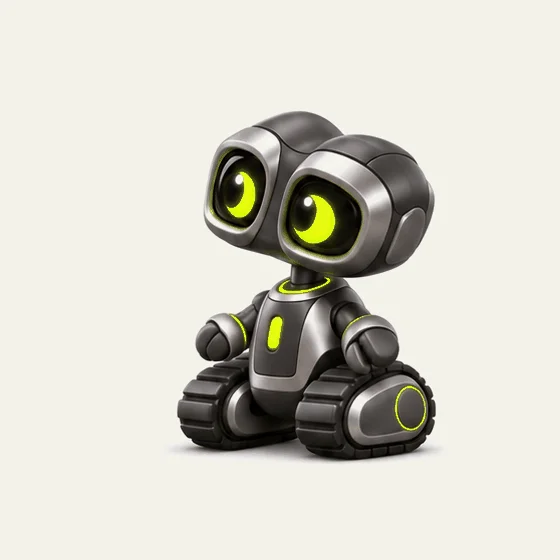

У каждого
свой характер.
Четыре персонажа, четыре маленьких мира — и бесконечно много поводов улыбнуться.
ЛИСТАЙТЕ ВНИЗ ↓
MOVE ↗
Персонажи, с которыми
хочется подружиться.
Хороший маскот — это больше, чем симпатичная картинка. Это характер, который помогает бренду говорить на человеческом языке. Мы исследовали четыре разных мира и нашли героя для каждого.
Знакомьтесь,
это они.
Разные по форме, настроению и задачам. Одинаково живые.
Dizzy✳
ЦИФРОВОЙ ДРУГ
Любопытный робот, который делает технологии немного теплее. Dizzy встречает, подсказывает и радуется маленьким победам вместе с пользователем.
HELPER ↘
У хорошего персонажа есть не только лицо.
У него есть история.
GENTLY ↘
Moss✳
ХРАНИТЕЛЬ МАЛЕНЬКОГО ЛЕСА
Тихий наблюдатель с большим грибным зонтиком. Moss напоминает замечать простые вещи и заботиться о мире вокруг — шаг за маленьким шагом.
Orbi✳
ИССЛЕДОВАТЕЛЬ НЕИЗВЕСТНОГО
Аксолотль в скафандре и вечный первооткрыватель. Для Orbi каждый вопрос — начало приключения, а любая ошибка — ещё один способ узнать новое.
CURIOUS ↘
MORNING ↘
Bean✳
БОДРОЕ НАЧАЛО ДНЯ
Маленькое кофейное зерно с огромным запасом энергии. Bean приносит в каждое утро щепотку юмора, немного ретро и много хорошего настроения.
FOUR LITTLE CHARACTERS.
ONE BIG IDEA.